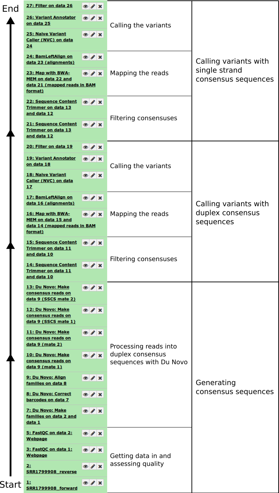

Calling very rare variants
Under Development!
This tutorial is not in its final state. The content may change a lot in the next months. Because of this status, it is also not listed in the topic pages.
 Anton Nekrutenko
Anton Nekrutenko Nick Stoler
Nick StolerOverview
question Questionsobjectives Objectives
What frequency of variants is so low that it is obscured by sequencing error rate?
What are the different types of consensus sequences produced from duplex sequencing?
requirements Requirements
Processing raw duplex sequencing data into consensus sequences
Find rare variants without relying on diploid assumptions
- Introduction to Galaxy Analyses
- Sequence analysis
- Quality Control: slides slides - tutorial hands-on
- Mapping: slides slides - tutorial hands-on
time Time estimation: 3 hours
Supporting Materials
last_modification Last modification: Jan 6, 2021
Introduction
This page explains how to perform discovery of low frequency variants from duplex sequencing data. As an example we use the ABL1 dataset published by Schmitt and colleagues (SRA accession SRR1799908).
Agenda
Background
Finding rare variants
Most popular variant callers focus on the common case of sequencing a diploid individual to find heterozygous and homozygous variants. This is a well-studied problem with its own challenges, but at least you can expect your variants to be present in either 100%, 50%, or 0% of your sample DNA. If you observe a variant present in 99%, 56%, or 2% of the reads at a site, you can probably assume the allele is actually present at 100%, 50%, or 0%, respectively, in your sample.
But in this tutorial, we’re looking for rare variants. So our true frequency might actually be 13%, 1%, or even 0.4%. The challenge then becomes distinguishing these situations from sequencing errors. Next-generation sequencers produce noise at this level, making it challenging to make this distinction in data produced with standard resequencing methods.
Duplex sequencing
Duplex sequencing is a method that addresses the problem of distinguishing sequencing signal from noise. It can increase sequencing accuracy by over four orders of magnitude. Duplex sequencing uses randomly generated oligomers to uniquely tag each fragment in a sample after random shearing. The tagged fragments are then PCR amplified prior to sequencing, so that many reads can be obtained from each original molecule. The tags in each read can then be used to identify which original fragment the read came from. Identifying multiple reads from each fragment allows building a consensus of the original sequence of the fragment, eliminating errors.
The key to duplex sequencing, as opposed to other types of consensus-based methods (review here), is that both ends of the original fragment are tagged such that its strands can be distinguished. Knowing which strand each read comes from allows us to recognize errors even in the first round of PCR.
Processing the raw reads into consensus sequences consists of four main steps:
- Group reads by their tags.
- Align reads in the same tag group.
- Build single-strand consensus sequences (SSCS) of reads coming from the same original strand.
- Build duplex consensus sequences (DCS) from pairs of SSCS.
Du Novo is a tool which can carry out these steps. Unlike most other such tools, it can do so without the use of a reference sequence, and it can correct for errors in the tags which can contribute to data loss.
comment Terminology
Du Novo processes the tags from each fragment by concatenating them into a single barcode.
- For a standard protocol with two 12bp tags, this results in a 24bp barcode which identifies each family.
Schmitt et al. 2012 provides this overview of the whole method:

Figure 1: The logic of duplex sequencing. The computational process is shown in part C.
The value of single-strand consensus sequences
The DCSs have the ultimate accuracy, yet the SSCSs can also be very useful when ampliconic DNA is used as an input to a duplex experiment. Let us illustrate the utility of SSCSs with the following example. Suppose one is interested in quantifying variants in a virus that has a very low titer in body fluids. Since the duplex procedure requires a substantial amount of starting DNA (between between 0.2 and 3 micrograms) the virus needs to be enriched. This can be done, for example, with a PCR designed to amplify the entire genome of the virus. Yet the problem is that during the amplification heterologous strands will almost certainly realign to some extent forming heteroduplex molecules:

Figure 2: Heteroduplex formation in ampliconic templates. Image by Barbara Arbeithuber from Stoler et al. 2016. Here there are two distinct types of viral genomes: carrying A and G. Because the population of genomes is enriched via PCR, heteroduplex formation takes place, skewing frequency estimates performed using DCSs.
In the image above there are two alleles: green (A) and red (G). After PCR a fraction of molecules are in heteroduplex state. If this PCR-derived DNA is now used as the starting material for a DS experiment, the heteroduplex molecules will manifest themselves as having an N base at this site (because Du Novo interprets disagreements as Ns during consensus generation). So, DSCs produced from this dataset will have A, G, and N at the polymorphic site. Yet, SSCSs will only have A and G. Thus SSCS will give a more accurate estimate of the allele frequency at this site in this particular case. In Du Novo SSCSs are generated when the param-check Output single-strand consensus sequences option of tool Du Novo: Make consensus reads tool is set to Yes (see below).
How to use this tutorial
The entire analysis described here is accessible as a Galaxy history that you can copy and play with.
comment Running the tools
- Leave all parameters on their default settings, unless instructed otherwise.
comment Helping Du Novo
But if you’d like to help improve Du Novo, consider checking
Yesunder param-check Send usage data.
This analysis can be divided into three parts:
- Generating consensus sequences
- Calling variants with duplex consensus sequences
- Calling variants with single strand consensus sequences
Here are the steps, displayed as the Galaxy history you’ll end up with if you follow the instructions:
- Note: Galaxy histories show the first step at the bottom!

Figure 3: Analysis outline
Generating consensus sequences
The starting point of the analysis is sequencing reads (in FASTQ format) produced from a duplex sequencing library.
Getting data in and assessing quality
We uploaded the Schmitt et al. 2015 data directly from SRA as shown in this screencast.
hands_on Hands-on: Importing the raw data
You can obtain the reads from this dataset by copying this history.
- Make sure you’re logged into Galaxy.
- Go to the history.
- Click on Import history in the upper right.
Or, if you’d like to use a different Galaxy instance, you can import it:
- Click on the gear icon at the top of the History pane.
- Click on “Import from File” at the bottom of the menu.
- Enter this link in the box under Archived History URL:
https://usegalaxy.org/history/export_archive?id=7ac09d1db287dbba
This created two datasets in our galaxy history: one for forward reads and one for reverse. We then evaluated the quality of the data by running FastQC on both datasets (forward and reverse). You can read about using tool FastQC here.
This gave us the following plots:
 |
 |
Figure 4: FastQC assessment of the quality of the raw reads. Left: Forward reads. Right: Reverse reads.
One can see that these data are of excellent quality and no additional processing is required before we can start the actual analysis.
Processing reads into duplex consensus sequences with Du Novo
Now we are ready to collapse the raw reads into duplex consensus sequences.
comment Finding Du Novo
- The tools in this portion of the tutorial can all be found in the NGS: Du Novo section.
Sorting reads into families
The tool Du Novo: Make families tool will separate the 12bp tags from each read pair and concatenate them into a 24bp barcode. Then it will use the barcodes to sort the reads into families that all descend from the same original fragment.
hands_on Hands-on: Sorting reads into families
Run tool Du Novo: Make families with the following parameters:
- param-file Sequencing reads, mate 1:
1: SRR1799908_forward- param-file Sequencing reads, mate 2:
2: SRR1799908_reverse- param-text Tag length:
12Output:
7: Du Novo: Make families on data 2 and data 1
Correcting barcodes
The grouping reads based on barcode relies on exact barcode matches. Any PCR or sequencing error in the barcode sequence will prevent the affected reads from being joined with their other family members.
Du Novo includes a tool which can correct most of these errors and recover the affected reads. This can increase the final yield of duplex consensus reads by up to 11% (Stoler et al. 2018, in preparation).
hands_on Hands-on: Correcting barcodes
Run tool Du Novo: Correct barcodes with the following parameters:
- param-file Input reads:
7: Du Novo: Make families on data 2 and data 1- param-text Maximum differences:
3Output:
8: Du Novo: Correct barcodes on data 7
Aligning families
After grouping reads that came from the same original fragment, we need to align them with each other. This next tool will perform a multiple sequence alignment on each family.
comment Analysis bottleneck
This is by far the most time-consuming step.
On this dataset, it took 2 hours to complete when run on Galaxy Main.
- At the time, Galaxy allocated 6 cores to the job.
hands_on Hands-on: Aligning families
Run tool Du Novo: Align families with the following parameters:
- param-file Input reads:
8: Du Novo: Correct barcodes on data 7- param-select Multiple sequence aligner:
Kalign2Output:
9: Du Novo: Align families on data 8
Making consensus sequences
Now, we need to collapse the aligned reads into consensus sequences. This next tool will process each group of aligned reads that came from the same single-stranded family into a consensus. Then it will align the consensus sequences from the two strands of each original molecule, and call a consensus between them.
Normally, the tool only produces the final double-stranded consensus sequences. But we will make use of the single-stranded consensus sequences later, so we’ll tell it to keep those as well.
hands_on Hands-on: Making consensus sequences
Run tool Du Novo: Make consensus reads with the following parameters:
- param-file Aligned input reads:
9: Du Novo: Align families on data 8- param-text Minimum reads for a consensus sequence:
3- param-text Consensus % threshold:
0.7- param-select Output format:
FASTQ- param-check Output single-strand consensus sequences as well:
YesOutputs:
10: Du Novo: Make consensus reads on data 9 (mate 1)11: Du Novo: Make consensus reads on data 9 (mate 2)12: Du Novo: Make consensus reads on data 9 (SSCS mate 1)13: Du Novo: Make consensus reads on data 9 (SSCS mate 2)
comment Setting output formats
You may have to set the datatype of the outputs from tool Du Novo: Make consensus reads tool.
Versions below 2.16 only set the datatype to
fastq, not the more specificfastqsanger. Many tools (like tool Map with BWA-MEM) won’t accept FASTQ input without it specifying what subtype it is.
- In your history, click on the pencil icon next to the dataset name.
- Click on the Datatypes tab.
- In the Change datatype pane, click on the dropdown where it says
fastq.- Enter
fastqsanger, then click the Change datatype button in the upper right of the pane.
details Where do the FASTQ quality scores come from?
There is no easy way to assign a PHRED score to a consensus base derived from many duplex reads.
So Du Novo does not attempt to give a meaningful score. It assigns the same arbitrary score to all bases.
- It produces FASTQ for compatibility, but the output contains no more information than a FASTA file.
You may have noticed the param-text Output PHRED score parameter in the tool Du Novo: Make consensus reads tool. This allows you to specify which score to assign to (all) the bases.
Filtering consensuses
You may have realized that when calling a “consensus” between two sequences, if the two disagree on a base, there’s no way to know which is correct. So in these situations, Du Novo uses the IUPAC ambiguity letter for the two different bases (e.g. W = A or T). Also, when calling single-stranded consensus sequences, if there aren’t enough high-quality bases to call a position (in the above hands-on, we set this threshold to 70%), it gives an N.
This information could be useful for some analyses, but not for our variant calling. The tool tool Sequence Content Trimmer will help with filtering these out. With the settings below, it will move along the read, tracking the frequency of ambiguous (non-ACGT) bases in a 10bp window. If it sees more than 2 ambiguous bases in a window, it will remove the rest of the read, starting with the first offending base in the window. We’ll also tell it to remove entirely any read pair containing a read that got trimmed to less than 50bp.
hands_on Hands-on: Filtering the consensus sequences
Run tool Sequence Content Trimmer with the following parameters:
- param-select Paired reads?:
Paired- param-file Input reads (mate 1):
10: Du Novo: Make consensus reads on data 9 (mate 1)- param-file Input reads (mate 2):
11: Du Novo: Make consensus reads on data 9 (mate 2)- param-text Bases to filter on:
ACGT- param-text Frequency threshold:
0.2- param-text Size of the window:
10- param-check Invert filter bases:
Yes- param-check Set a minimum read length:
Yes- param-text Minimum read length:
50Outputs:
14: Sequence Content Trimmer on data 10 and data 1115: Sequence Content Trimmer on data 10 and data 11
Calling variants with duplex consensus sequences
At this point we have trimmed DCSs. We can now proceed to call variants. This involves aligning the variants against the reference genome, then counting variants.
We’re not specifically interested in the reference sequence, since all we care about is sequence content of the consensus reads. But we’ll be using the reference sequence to figure out where all the reads come from. This lets us stack them on top of each other, with equivalent bases lined up in columns. Then we can step through each column, count how many times we see each base, and and compile a list of variants.
Mapping the reads
Align against the genome with BWA-MEM
Here, we’ll use tool Map with BWA-MEM to map the DCS reads to the human reference genome.
hands_on Hands-on: Align with BWA-MEM
Run tool Map with BWA-MEM with the following parameters:
- param-select Using reference genome?:
Human (Homo sapiens) (b38): hg38- param-file Select first set of reads:
14: Sequence Content Trimmer on data 10 and data 11- param-file Select second set of reads:
15: Sequence Content Trimmer on data 10 and data 11Output:
16: Map with BWA-MEM on data 15 and data 14 (mapped reads in BAM format)
Left Aligning indels
To normalize the positional distribution of indels we use the tool BamLeftAlign utility from the FreeBayes package. You can find it in the NGS: Variant Analysis section. This is necessary to avoid erroneous polymorphisms flanking regions with indels (e.g., in low complexity loci):
hands_on Hands-on: Left-align indels
Run tool BamLeftAlign with the following parameters:
- param-file Select alignment file in BAM format:
16: Map with BWA-MEM on data 15 and data 14 (mapped reads in BAM format)- param-select Using reference genome:
Human (Homo sapiens): hg38
- The same genome we aligned to.
Output:
17: BamLeftAlign on data 16 (alignments)
Calling the variants
Now we’ll use our aligned consensus reads to find variants.
Normally, in a diploid resequencing experiment, you would call variants relative to the reference. So, you’d report sites which are different from the reference (and whether they’re hetero- or homozygous).
In our case, we’re interested in rare variants. So what we’ll report is the sites where there is more than one allele, and what the frequency is of the less-common allele (the minor allele). This has the potential to include every small sequencing error (even though we’re using duplex, there still are errors). So to reduce the noise, we’ll set a lower threshold at 1% minor allele frequency (MAF).
Finding variants in the alignment
To identify sites containing variants we use the tool Naive Variant Caller (NVC) tool from the NGS: Variant Analysis section. This reads the alignment and counts the number of bases of each type at each site.
hands_on Hands-on: Count the variants
Run tool Naive Variant Caller (NVC) with the following parameters:
- param-file BAM file:
17: BamLeftAlign on data 16 (alignments)- param-select Using reference genome:
hg38
- The same genome we aligned to.
- param-check Insert Restrict to regions: Click to add a region.
- param-text Chromosome:
chr9
- ABL1 is on chr9. Restricting it to this region saves some processing time.
- param-text Minimum base quality:
0
- In our case, base quality isn’t meaningful, so we set the threshold to 0.
- param-text Minimum mapping quality:
20- param-text Ploidy:
1
- Ploidy is irrelevant here as it is a mixture of multiple genomes.
Output:
18: Naive Variant Caller (NVC) on data 17
The tool Naive Variant Caller (NVC) generates a VCF file that can be viewed at genome browsers such as IGV. Yet one rarely finds variants by looking at genome browsers. We’ll want to use tools to search for variants that fit our criteria.
Finding minor alleles
Now we’ll want to parse the VCF produced by the NVC, determine what the major and minor allele is at each site, and calculate their frequencies. The tool Variant Annotator from the NGS: Variant Analysis section can do this.
hands_on Hands-on: Read the variants file
Run tool Variant Annotator with the following parameters:
- param-file Input variants from Naive Variants Detector:
18: Naive Variant Caller (NVC) on data 17- param-text Minor allele frequency threshold:
0- param-text Coverage threshold:
10- param-check Output stranded base counts:
Yes
- To be able to filter for strand bias.
Output:
19: Variant Annotator on data 18
Filtering out the noise
Now we have a file containing the base counts for every site covered by at least 10 reads. We’d like to filter through this data to find sites with a reasonable chance of being a real variant, not sequencing error.
The tool Variant Annotator produces a simple tab-delimited file, with one site per line. We can use the tool Filter tool from the Filter and Sort section to process this kind of file. We’ll use the filter c16 >= 0.01 to remove lines where the value in column 16 is less than 0.01. Column 16 contains the minor allele frequency, so this will remove all sites with a MAF less than 1%.
hands_on Hands-on: Filter the raw variants list
Run tool Filter with the following parameters:
- param-file Filter:
19: Variant Annotator on data 18- param-text With following condition:
c16 >= 0.01- param-check Number of header lines to skip:
1Output:
20: Filter on data 19
Results
Now we’re down to just two sites:
| Position (chr9) | Major allele | Minor allele | MAF |
|---|---|---|---|
| Column 3 | Column 14 | Column 15 | Column 16 |
| 130,872,141 | G | A | 0.01259 |
| 130,880,141 | A | G | 0.47764 |
The polymorphism we are interested in (and the one reported by Schmitt et al. 2015) is at the position 130,872,141 and has a frequency of 1.3%. The other site (position 130,880,141) is a known common variant rs2227985, which is heterozygous in this sample.
Calling variants with single strand consensus sequences
Analysis of SSCS data follows the exact same trajectory:
- Filtering consensuses
- Mapping the reads - Aligning against genome - Left aligning indels
- Calling the variants
tip Tip: Re-running with the same settings
There’s a shortcut to avoid setting every parameter the second time you run a tool.
- In your history, click on an output of the first run to expand it.
- Click on the button with the circular “re-run” arrows.
- Now the parameters will all be the same as the last run. All you have to do is change the input file(s).
Re-running analyses with workflows
Instead of manually re-running all the tools in the variant calling section, you can use a workflow to automatically run the same tools, but on the SSCS reads. Workflows let you run a chain of tools on different input data with a single click of a button. You can find more information on using workflows here.
We’ve prepared two workflows which split the above analysis into two steps:
- Using Du Novo to create consensus sequencs from raw reads.
- This will generate trimmed DCS and SSCS files from raw sequencing data.
- This does not include the FastQC step. You should always run FastQC on your raw reads first, to check the quality of your sequencing run before proceeding with the analysis.
- Calling variants from consensus sequences.
- This takes a pair of FASTQ files and calls variants using them.
- If you’d like variants from both DCS and SSCS, you’ll have to run this twice, once on each.
- N.B. Remember that this workflow is designed for the above ABL1 analysis. If you want to use it for any other dataset, you’ll have to change the relevant options.
You can use the variant calling workflow to call variants using the SSCS instead of the DCS.
comment Helping Du Novo
The param-check Send usage data option is left off in the above workflows.
- We want to make sure you only share data knowingly.
But again, if you’d like to help improve Du Novo, consider turning it on.
Workflow: Making consensus sequences

Workflow: Variant calling

Conclusion
You should now understand duplex sequencing, rare variants, and be able to process the former to find the latter.
If things don’t work…
…you need to complain. Use Galaxy’s Help Channel to do this.
keypoints Key points
Diploid variant calling relies on assumptions that rare variant calling cannot make
Duplex consensus sequences are usually most accurate, but sometimes you must rely on single-strand consensus sequences instead.
Useful literature
Further information, including links to documentation and original publications, regarding the tools, analysis techniques and the interpretation of results described in this tutorial can be found here.
Feedback
Did you use this material as an instructor? Feel free to give us feedback on how it went.

Citing this Tutorial
- Anton Nekrutenko, Nick Stoler, 2021 Calling very rare variants (Galaxy Training Materials). /training-material/topics/variant-analysis/tutorials/dunovo/tutorial.html Online; accessed TODAY
- Batut et al., 2018 Community-Driven Data Analysis Training for Biology Cell Systems 10.1016/j.cels.2018.05.012
details BibTeX
@misc{variant-analysis-dunovo, author = "Anton Nekrutenko and Nick Stoler", title = "Calling very rare variants (Galaxy Training Materials)", year = "2021", month = "01", day = "06" url = "\url{/training-material/topics/variant-analysis/tutorials/dunovo/tutorial.html}", note = "[Online; accessed TODAY]" } @article{Batut_2018, doi = {10.1016/j.cels.2018.05.012}, url = {https://doi.org/10.1016%2Fj.cels.2018.05.012}, year = 2018, month = {jun}, publisher = {Elsevier {BV}}, volume = {6}, number = {6}, pages = {752--758.e1}, author = {B{\'{e}}r{\'{e}}nice Batut and Saskia Hiltemann and Andrea Bagnacani and Dannon Baker and Vivek Bhardwaj and Clemens Blank and Anthony Bretaudeau and Loraine Brillet-Gu{\'{e}}guen and Martin {\v{C}}ech and John Chilton and Dave Clements and Olivia Doppelt-Azeroual and Anika Erxleben and Mallory Ann Freeberg and Simon Gladman and Youri Hoogstrate and Hans-Rudolf Hotz and Torsten Houwaart and Pratik Jagtap and Delphine Larivi{\`{e}}re and Gildas Le Corguill{\'{e}} and Thomas Manke and Fabien Mareuil and Fidel Ram{\'{\i}}rez and Devon Ryan and Florian Christoph Sigloch and Nicola Soranzo and Joachim Wolff and Pavankumar Videm and Markus Wolfien and Aisanjiang Wubuli and Dilmurat Yusuf and James Taylor and Rolf Backofen and Anton Nekrutenko and Björn Grüning}, title = {Community-Driven Data Analysis Training for Biology}, journal = {Cell Systems} }